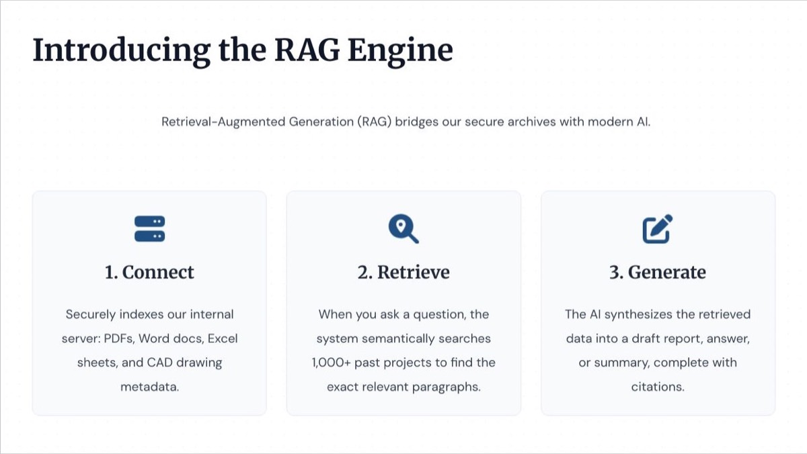
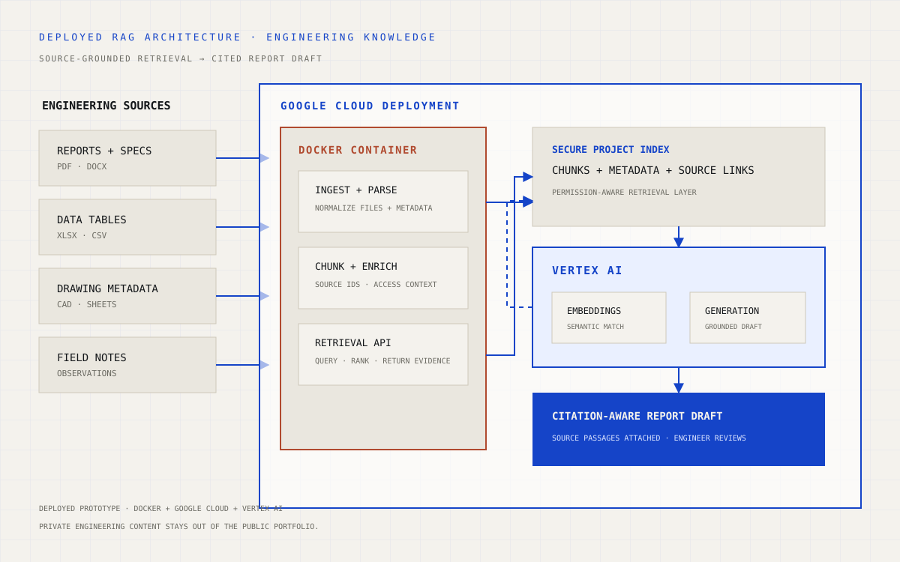

01 / Context
Engineering answers existed, but were scattered across file types.
Useful precedent was spread across reports, specifications, spreadsheets, drawing metadata, and field notes. Folder names could locate a project, but not necessarily the paragraph, detail, or observation needed for a new technical question.
The system was designed around a stricter requirement than generic chat: every useful draft needed to remain connected to retrievable source evidence.

02 / What I built
A retrieval-and-drafting service built on Vertex AI.
- Created a multi-format ingestion path for reports, spreadsheets, drawing metadata, and field observations.
- Structured content into retrievable chunks with source identifiers and useful engineering metadata.
- Used Vertex AI for the semantic and generative layers of the RAG workflow.
- Returned source-grounded passages before producing citation-aware report language.
- Prepared 17 structured field-note-to-report examples for drafting and review behaviour.
03 / Deployment
Containerized with Docker and deployed on Google Cloud.
I packaged the application and its dependencies as a Docker container so the same service could run consistently outside the development environment. The deployed Google Cloud environment hosted the working RAG pipeline and connected it to Vertex AI.
- Ingest. Parse approved engineering files and preserve document and source metadata.
- Index. Store searchable chunks for semantic and metadata-aware retrieval.
- Retrieve. Rank evidence relevant to the user’s question before any answer is drafted.
- Generate. Use Vertex AI to synthesize retrieved evidence into a cited response or report section.
- Review. Keep an engineer responsible for interpretation, completeness, and final issue.

04 / My role
From product concept through cloud deployment.
I shaped the use case, designed the retrieval flow, prepared the drafting examples, implemented the application logic, containerized it with Docker, and deployed the prototype in Google Cloud. I also defined the evidence boundary: retrieved sources support the draft, while engineering judgment stays with the reviewer.
05 / Outcome
A working deployed prototype—not just a pitch deck.
The result was a cloud-deployed service that could retrieve engineering context and produce reviewable, source-aware draft language. The case study does not present projected efficiency figures as measured outcomes; the value demonstrated here is the implemented workflow, deployment, and traceability model.